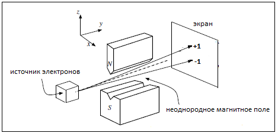
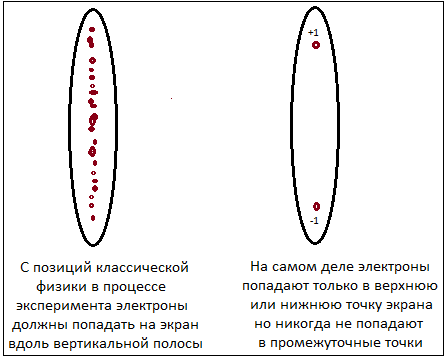
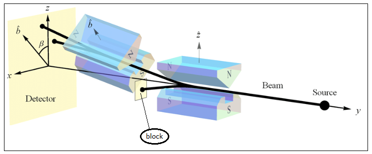
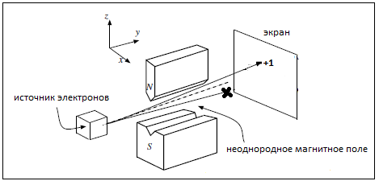
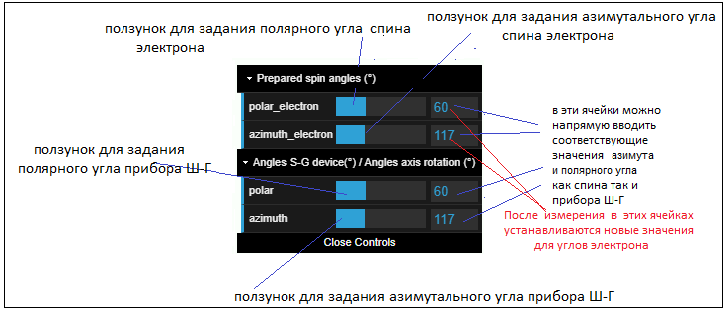
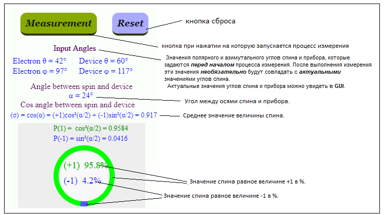
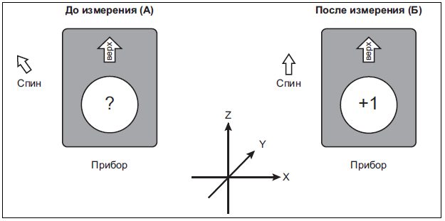
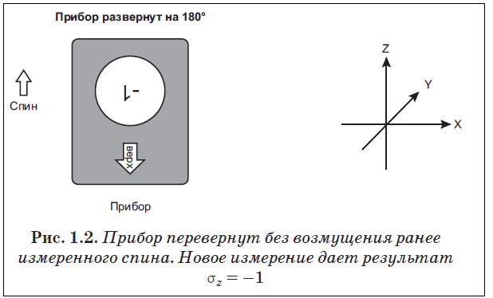
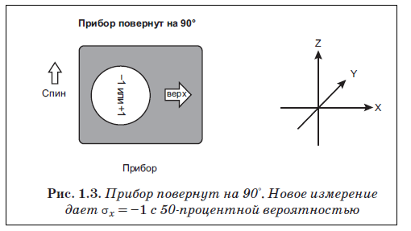
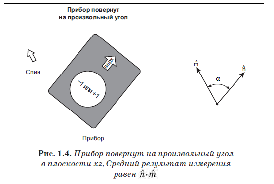

Set the values of the polar and azimuthal angles of the electron either in the GUI in the upper right part of the program,
or using the keys located under the GUI.
Set the values of the polar and azimuthal angles of the Stern-Gerlach device either in the GUI in the upper right part of the program,
or using the keys located under the GUI.
Press the "Measurement" key in the middle part of the program window that starts the measurement process.
In response to the action of this key, the measurement results will appear in the middle part of the program window.
When creating this program, I followed the description of the experiment described in the book
by Leonard Susskind and Art Friedman "Quantum Mechanics: The Theoretical Minimum"
В 1922 году немецкие физики Отто Штерн и Вальтер Герлах проделали эксперимент который стал одним из основных в становлении новой науки - квантовой механики. Этот эксперимент подтвердил, что атомы обладают магнитным моментом, проекция которого на направление внешнего магнитного поля принимает лишь определённые значения (то есть пространственно квантованы). В 1925 г. С.Гаудсмит и Дж.Уленбек выдвинули теорию о том, что сам электрон является носителем "собственных" механического и магнитного моментов, не связанных с движением электрона в пространстве. Эта гипотеза получила название гипотезы о спине электрона.
Схематично эксперимент Штерна-Герлаха (Ш-Г) применительно к электронам можно изобразить следующим образом.

Суть опыта в самом кратком изложении заключается в следующем. Пучок электронов выходит из источника и проходит
через неоднородное магнитное поле.
Магнитное поле создается между двумя магнитными полюсами, один из которых плоский, а другой – сильно заостренный.
В результате напряженность магнитного поля возрастает у острого полюса и уменьшается у плоского.
Если предположить, что магнитные моменты электронов ориентированы хаотично,
то тогда на расположенным по направлению движения электронов экране должна проявиться размытая вертикальная полоса
на которой расположатся попавшие на экран электроны.
Исходя из здравого смысла мы должны были ожидать именно такого результата при проведении опыта.
Совершенно неожиданно в результате этого опыта оказалось, что спин квантуется. Попросту говоря спин может принимать
только одно из двух возможных значений.
Вместо размытой вертикальной полосы, на экране отображаются два пятна.
Все электроны разделились строго на два пучка. Верхний пучок
соответствует электронам с проекцией спина +1, нижний – электронам с проекцией спина равной –1.
Более точно +ℏ/2 и -ℏ/2 (ℏ-постоянная Планка) - но для построения программы визуализации
прибора Штерна-Герлаха для простоты примем их равными +1 и -1. Принципиально от этого ничего не изменится.
Эксперимент свидетельствует в пользу того, что магнитные моменты электронов вдоль выделенного направления принимают лишь
два определённых значения. На приведенном рисунке эти значения обозначены символами "+1" и "-1".

Если повернуть прибор Штерна-Герлаха на некоторый угол относительно первоначального направления, то как ни странно
вдоль любой произвольно ориентированной в пространстве оси результат будет одним и тем же.
Электроны всегда разделяются строго на два пучка: верхний, с проекцией спина +1, и нижний, с проекцией спина –1.
Обычно при эксперименте используют (по крайней мере) два прибора Ш-Г. Первый прибор Ш-Г, который является
вспомогательным, приготавливает спин строго в определенном направлении: или +1, или -1. Для этого одно из направлений спина
блокируют. Блокировка необходима по той причне, что источник испускает электроны как со спином +1 так -1
(обычно с вероятностью 50% на 50%). А в эксперименте, который будет проводиться
обычно требуется совершенно определенное направление спина.
Второй прибор Ш-Г, который является основным из двух приборов, может быть повернут относительно первого
на произвольный угол.

Для моделирования физического прибора Ш-Г была сделана программа позволяющая осущестаить практически все эксперименты
которые можно сделать на реальном приборе Ш-Г, хотя внешний вид прибора в программе резко отличается от внешнего вида
физического прибора. При создании модели эксперимента Ш-Г я придерживался описания этого эксперимента приведенного
в книге Леонарда Сасскинда и Арта Фридмана "Квантовая механика. Теоретический минимум".
В предыдущей версии
данной программы два элемента
"N" и "S" соответствующие северному и южному полюсам магнита, исползуемого в эксперименте, показаны явно.
В данной программе, чтобы не загромождать картину, я не стал отображать магниты и изменил обозначения на 3D-модели сделав
их более общепринятыми. В предыдущей версии программы почти все обозначения соответствовали обозначениям в упомянутой книге
Леонарда Сасскинда и Арта Фридмана.
Если для "приготовления" спина электрона используется отдельный прибор Ш-Г,то в программной реализации "приготовленное" состояние
спина задается направлением вектора D. Буква D является первым символом слова Device (прибор).
Вектор D всегда задает ориентацию прибора Ш-Г.
Пусть в реальном физическом приборе мы хотим получить приготовленное значение спина вверх по оси Z, то тогда мы должны
использовать прибор Ш-Г, в котором заблокирован (например поставлена непроницаемая пластина)поток электронов со спином
равным "-1". Правда при этом только примерно 50% от общего количества электронов будет иметь спин равный "+1". Но в данном
случае это не выжно - главное мы приготовили для дальнейших измерений только требуемый спин электронов.

Для программной реализации прибора Ш-Г мы просто ориентируем прибор вдоль оси Z. Как раз этот случай показан на
исходном состоянии программы в которой вектор D направлен вдоль оси Z. Мы можем прграммно задать любое
другое направление спина сориентировав соответтвующим образом прибор. Ориентация прибора всегда совпадает
с направлением вектора D.
После того как прибор Ш-Г сориентирован требуемым образом можно приступить к измерениям спина.
Направление, вдоль которого мы хотим измерить спин электрона, будем задавать вектором D.
Направление, вдоль которого мы подготовили (prepare) спин электрона, будем задавать вектором A.
И вектор D, и вектор A задают координаты точек на сфере и поэтому они задаются при помощи
сферических координат:
x = r·sinθ·cosφ
y = r·sinθ·sinφ
z = r·cosθ
Для задания параметров используется панель управления GUI. Прграмма предусматривает возможность задания азимутальных углов спина (φspin) электрона и прибора (φdevice) в пределах от 0° до 720°. Полярный угол спина электрона (θspin) и прибора (θdevice) можно изменять в диапазоне 0° - 180°. Значения полярного и азимутального углов как спина электрона, так и прибора Ш-Г, можно задать в панели задания исходных данных - GUI. Панель GUI показана на следующем рисунке:
Ячейки панели GUI, используемые для прямого ввода значений углов, также полезно использовать для текущего просмотра значений этих углов при работе с программой. Эти ячейки всегда отображают актуальные значения полярного и азимутального углов спина и прибора.
Дополнительно предусмотрена возможность задания наиболее часто используемых значений углов спина и прибора при помощи ряда кнопок расположенных под панелью GUI.
Результаты измерения можно увидеть в следующей панели:

Рассмотрим процесс измерения при помощи модели эксперимента Ш-Г. Будем почти полностью следовать книге Леонарда Сасскинда и Арта Фридмана "Квантовая механика. Теоретический минимум". В большинстве случаев я буду приводить прямые цитаты из этой книги (ее я буду называть просто "Книга").
Обозначим квантовый спин символом σ. Спин может принимать строго только одно из двух значений - либо σ = +1 либо σ = –1.
При этом очень большое значение имеет направление вдоль которого измеряется спин. Но еще раз подчеркнем,
что каким бы это направление не было, при измерении мы всегда получим спин равным либо σ = +1 либо σ = –1.
В Книге говорится, что первоначально мы не знаем, каково состояние системы: σ = +1 или σ = –1. Поэтому и используется
предварительное приготовление спина. В данной программе мы приготавливаем (задаем) состояние спина путем первоначальной
ориентации вектора A. Физически приготовление спина означает установку его в полностью определенное состояние в пространстве.
(При первом запуске программы мы видим, что спин уже предустановлен со значением
полярного угла θspin = 30° и азимутального угла φspin = 0.)
Как указано в книге направим прибор вертикально вверх. Для этого произведем следующие действия.
Установка углов прибора
Азимутальный угол прибора φdevice установим равным 0°.
Полярный нгол прибора θdevice установим равными 0°.
Cтрелка обозначенная символом D после установки поворачивается в положение заданные полярным
и азимутальным углами прибора.
Произведем измерение. Для этого нажмем кнопку Mesuarement.
После того как прибор Ш-Г измерит σ, в панели отобразится σ = +1 либо σ = –1.
Ось спина (ось вектора A совпадет с осью прибора Ш-Г (осью вектора D).
Взглянув на прибор, мы определим значение σ. Также на круговой диаграмме отобразятся
вероятности получения значений σ = +1 или σ = –1. Предположим, что значение спина стало равным σ = +1.
Таким образом мы приготоволи спин направленным вверх (θdevice = 0°) и при этом
его значение стало равным +1.
Вся эта процедура представляет собой очень простой эксперимент, предназначенный для измерения σ.
Для иллюстрации приведем соответствующую иллюстрацию из Книги.

Замечание
В дальнейшем для предварительной установки спина перед измерением мы будем просто
задавать два угла определяющие ориентацию спина в пространстве.
Эти две установки углов достаточны для предварительной установки спина в данной программной модели:
Полярный угол спина (θspin)
Азимутальный угол спина(φspin)
После предварительной установки ориентации спина (вектор A) следует произвести установку ориентации прибора Ш-Г при помощи углов θdevice и φdevice (вектор D). Для запуска процесса измерения спина используется кнопка Mesuarement. После проведения процесса измерения вектор спина A будет всегда находиться на той же прямой на которой лежит вектор D задающий ориентацию прибора Ш-Г. Но при этом это направление вектора A может либо совпадать с вектором D (σ = +1), либо быть противоположным вектору D (σ = -1). Вероятность получения σ = +1 либо σ = –1 будет зависеть от направлений осей прибора и приготовленного направления спина. Причем величина вероятности будет зависеть только от того насколько угол θdevice отличается от угла θspin. Азимутальные углы прибора и спина на эту вероятность не влияют. Про значение азимутальных углов будет сказано в следующих разделах.
Теперь, когда мы измерили σ, измерим значение σ еще раз. Считаем, что спин уже приготовлен в результате первого его измерения и поэтому просто нажимем кнопку Measurement. Мы должны получить тот же результат, что и в первый раз. За результатом σ = +1 последует снова σ = +1. И точно так же если при первом измерении σ = –1, то и припоследующих измерениях получим σ = –1. Так будет при любом числе повторений. Мы также можем сказать следующее: первое взаимодействие с прибором приготовило систему в одном из двух состояний. Последующие эксперименты подтверждают это состояние. Пока нет никаких различий между классической и квантовой физикой.
Перезапустим программу и зададим направление спина θspin = 30°.
Произведем измерение - нажмем кнопку Mesuarement.
Так как при перезапуске программы прибор был направлен вертикально вверх (θdevice = 0°),
то вектор спина с вероятностью 93.3% будет направлен также вертикально вверх. Предположим, что спин действительно
стал направленным вверх - он подготовлен для последующих измерений (σ = +1).
Если таперь не меняя спин снова произвести одно или несколько измерений подряд,
то так как вектора D и A совпадают, за результатом σ = +1 последуют снова σ = +1.
И точно так же для σ = –1 (если спин подготовлен вертикально вниз) так будет при любом числе повторений.
Иными словами повторнрые измерения (повторные нажатия кнопки Mesuarement) результат не меняют.
Теперь сделаем кое-что новое. После приготовления спина вертикально вверх (θspin = 0°)
перевернем прибор вниз головой (θdevice = 180°) и затем измерим спин σ.
При этом мы обнаружим, что если первоначально было приготовлено σ = +1, то перевернутый прибор выдаст σ = –1.

И аналогично, если первоначально было приготовлено σ = –1 (θspin = 180°), перевернутый прибор (θdevice = 180°) покажет σ = +1. Другими словами, переворачивание прибора обменивает σ = +1 и σ = –1. Исходя из этих результатов, можно заключить, что σ — это степень свободы, связанная с ощущением направления в пространстве.
Если спин направлен вертикально вверх (вектор A) и, при этом, прибор перевернут (вектор D направлен вертикально вниз,
то, очевидно, вероятность того, что мы при замере спина вдоль оси вектора прибора D мы получим ноль.
Что можно увидеть на круговой диаграмме:
P(1) = 0 и σ = –1
Тоже самое ожно увидеть, если спин направлен вертикально вниз (вектор A), но прибор (вектор D направлен вертикально вверх,
то, очевидно, вероятность того, что мы при замере спина вдоль оси вектора прибора D мы получим ноль.
Это также можно увидеть на круговой диаграмме:
P(1) = 0 и σ = –1
Замечание
Для математического описания квантового спина используется специальный объект, который имеет
название вектор состояния. Два противоположных направления, например вверх и вниз, — это не ортогональные
направления в пространстве, несмотря на то что связанные с ними векторы состояний ортогональны
в пространстве состояний (напомним, что ортогональность - это перпендикулярность).
В дальнейшем мы увидим, что в этих двух случаях, при переходе от противоположно направленных векторов (A и D)
к ортогонально направленным векторам состояния, вектор спина сответствующий направлению A окажется перпендикулярным
вектору, соответствующему направлению D. И поэтому проекция одного вектора состояния на другой вектор
(скалярное произведение) окажется равной нулю.
Предположим, что спин приготовлен в состоянии σ = +1 (A = 0°). И пусть сначала прибор расположен вертикально
вдоль оси z (D = 0°).
Повернем прибор на 90, чтобы вектор D стал направлен вдоль оси x и выполняем измерение (нажимая кнопку,
Mesuarement), которое по нашему предположению даст x-компоненту спина σx.
Далее приведу почти прямую цитату из Книги:
Если окажется, что σ действительно представляет собой компоненту вектора в проекции на ось «верх», то следует ожидать, что она будет равна нулю. Почему?
Первоначально мы подтвердили, что величина σ направлена вдоль оси z, а значит, ее компонента вдоль оси x должна быть равна нулю. Но, измеряя σx, мы обнаруживаем сюрприз: вместо σx = 0 прибор выдает либо σx = +1, либо σx = –1.
Прибор очень упрям и независимо от того, в какую сторону он сориентирован, отказывается давать какие-либо результаты кроме σ= ±1. Если спин действительно является вектором, то это очень странный вектор.
И все же мы обнаружили нечто интересное. Допустим, мы повторяем эту операцию многократно, каждый раз следуя одной и той же процедуре.
Вначале выставляем прибор вдоль оси z и приготовливаем σ = +1 (A = 0°).
Поворачиваем прибор так, чтобы он был ориентирован вдоль оси x (D = 90°).
Измеряем σ (нажимаем кнопку Mesuarement).
Повторные эксперименты выдают случайную последовательность плюс-единиц и минус-единиц. Детерминизм рушится, но особым образом. Если проделать все это множество раз, то обнаружится, что число событий σ = +1 и событий σ = –1 статистически одинаково.
Иными словами, среднее значение σ равно нулю. Вместо классического результата, а именно равенства нулю компоненты σ в проекции на ось x, мы обнаруживаем, что нулю равен средний результат этих повторных измерений.
Поворот прибора Ш-Г на произвольный угол
Теперь приготовим спин вдоль любого направления m. Для этого зададим вектору A, например, полярный угол равный 30°. Измерим спин при помощи прибора Ш-Г вдоль направленя заданного вектором n. Это направление зададим при помощи D с полярным углом равным 60°.
Измеряем σ путем нажатия кнопки Mesuarement.
Эксперимент даст случайный результат ±1, но со средним значением, равным косинусу угла α между n и m. Иными словами, среднее значение будет n·m. На круговой диаграмме мы увидим вероятности получения спина равные "+1" и "-1".
Если бы спин представлял собой феномен из классической физики, то при любом единичном измерении мы всегда бы получали значение σ = cos(α). Но в квантовой физике при каждом единичном измерении спина получаем только одно из двух значений - либо +1 либо -1. И поэтому в квантовой физике только проведение множества единичных измерений дает значение 〈σ〉 = cos(α), которое является средним этих измерений.
Если проделать эксперименты для самых различных углах α можно увидеть, что максимальная неопределенность возникает при взаимно перпендикулярном расположении оси приготовленного спина и оси прибора. Наоборот при полном совпадении оси приготовленного спина с осью прибора неопределенность полностью исчезает. Это в точности совпадает с математическим выражением 〈σ〉 = cos(α). Причем прибор всегда измеряет величину спина только вдоль своей оси и это значение при каждом отдельном измерении равно только одному из двух значений +1 или -1. Одновременно замерить спин по двум осям принципиально невозможно с помощью любого устройства или прибора.
Обратим внимание на глубокий смысл выражения 〈σ〉 = cos(α).
Вспомним как вычисляется среднее значение в математике. Представим себе подбрасывание монеты и вероятность получения орла или решки. Обозначим орел как +1, а решку как -1. Очевидно что среднее значение мы можем найти сложив все +1 и -1 и разделив полученную сумму на количество подбрасываний монеты (количество измерений). Среднее значение расположится в пределах от -1 до +1.Но можно и по другому вычислить среднее значение. Предположим, что мы имеем идеальную монету у которой вероятность выпадения +1 равно 0.5 или 50%, а вероятность выпадения -1 также равно 0.5 или 50%. Тогда среднее значение выпавшей величины можно найти по следующей формуле:
(+1)×(вероятность выпадения +1) + (-1)×(вероятность выпадения -1) = (+1) × 0.5 + (-1) × 0.5 = 0
Иными словами среднее значение равно 0. Что и следовало ожидать от идеальной монеты.
Если имеем монету со смещенным центром тяжести с вероятностями +0.3 и -0.7 соответственно то получим
(+1)×(вероятность выпадения +1) + (-1)×(вероятность выпадения -1) = (+1) × 0.3 + (-1) × 0.7 = -0.4
Среднее значение выпавшей величины равно -0.4, что говорит о более частом выпадении решки.Вернемся к выражению 〈σ〉 = cos(α). В элементарной математике есть простая (но замечательная !!!) формула:
cos(α) = cos2(α/2) - sin2(α/2)
Используя эту формулу мы можем записать выражение 〈σ〉 = cos(α) в следующем виде:
〈σ〉 = (+1)·cos2(α/2) + (-1)·sin2(α/2)
Таким образом вероятность того, что в результате измерения будет получена +1 равна cos2(α/2), вероятность получения -1 будет равной sin2(α/2). Из приведенной формулы видно, что среднее значение величины спина оказалось выраженным через квадраты синуса и косинуса половинных углов α/2.Несколько неожиданно в формулах появился половинный угол α/2. В действительности половинные углы имеют очень важное значение в математике описывающей квантовый спин электрона.
В квантовой механике для обозначения статистического среднего значения величины используется скобочная нотация Дирака:
〈σ〉 = cos(α) = (+1)·cos2(α/2) + (-1)·sin2(α/2) = n·m.Так как вероятность того, что в результате измерения будет получена +1 равна cos2(α/2), а вероятность получения -1 будет равной sin2(α/2), то, по всей видимости, величины cos(α/2) и sin(α/2) без возведения их в квадрат, также представляют интерес. Этим вопросом займемся во второй части.
Интересная статья Василия Янчилина про эксперимент Штерна-Герлаха Почему проекция момента импульса всегда принимает целочисленные значения вдоль любой произвольно ориентированной оси?/.
Preface Part Ⅱ Part Ⅲ Part Ⅳ